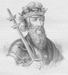

Ortaçağ İngilteresi’nin en güçlü krallarından biri sayılan 3. Edward (1312-1377) ülkesini büyük bir askeri güç haline getirmiştir. Fransa ile yapılan Yüz Yıl Savaşları’nı başlatmış, ülkesinde parlamenter sistemin ve hukuki yapının şekillenmesine öncülük etmiştir.

Öte yandan Edward farkında olmadan ileride ülkesinde başlayacak olan bir iç savaşın tohumlarını da atmıştır. Ölümünden onlarca yıl sonra varisleri arasında başlayan taht kavgaları “Güller Savaşı” olarak anılacaktır.
Edward, Windsor Kalesi’nde doğdu. 2. Edward’ın (1284-1327) ilk oğluydu. 2. Edward’ın felaketlerle dolu iktidarı, azlinin ardından son bulmuş ve Edward kısa süre sonra ölmüştü. Yerine henüz on beş yaşında olan oğlu geçti. Annesinin sevgilisi olan Roger Mortimer (1287-1330), delikanlının adına annesiyle birlikte ülkeyi yönetmek için kral naibi olarak atandı. Edward on sekiz yaşına gelince Mortimer’i devirip idam etti. Ardından annesinin yetkilerini elinden aldı.
Edward, İngiltere’nin İskoçya üzerindeki kontrolünü arttırdı. Fransa’yı krallığının bir parçası haline getirmenin yollarını aradı. Zindana attığı annesi tarafından eski bir Fransa kralının torunuydu. Aile ağacına dayanarak 1337 yılında Fransız tahtında hak iddia etti. Fransa ile yaşanan bu anlaşmazlık 1453 yılına kadar devam edecekti. Bu dönemde yaşanan mücadeleler “Yüz Yıl Savaşları” olarak anıldı.
Edward iki meclisli bir yönetim yapısı kurdu. Bir tarafta Lordlar Kamarası, diğer tarafta Avam Kamarası olacaktı. Savaşı finanse edecek vergiler koyarken parlamentonun desteğini almak zorunda kalmıştı. Bu uygulama, İngiltere’de parlamentonun taşıdığı önemi arttırdı. İngiliz teamül hukukunun pek çok unsurunu yazılı hale getirdi. Bu girişim ile İngiliz ve Amerikan hukuk sistemlerinin temellerini de atmış oldu.
Elli yıla uzanan hükümranlık süresi 18. yy’a kadar en uzun soluklu iktidar olarak kalacaktı. Dönemin sonlarına doğru bunama belirtileri göstermeye başladı. Öldükten sonra yerine torunu 2. Richard (1367-1400) geçti.
Ek Bilgiler
1- 3. Edward, saray erkanının önemli bir bölümü gibi İngilizce değil Fransızca konuşuyordu. Bu dönemde yazılı hale getirilen pek çok yasa Hukuk Fransızcası ile yazılmıştır. Hukuk Fransızcası İngiltere’de yüzlerce yıl boyunca kullanılmaya devam etti. Günümüzde kullanılan pek çok hukuksal terim bu dilden alınmıştır: “mortgage” (ipotek) ya da “voir dire” (jüri ehliyeti) gibi.
2- Pek çok İngiliz kralından farklı olarak Edward’ın hiç gayrimeşru çocuğu yoktu.
3- 1347 yılında vebanın İngiltere’de görülmeye başlaması Edward’ın dönemine denk gelmektedir.